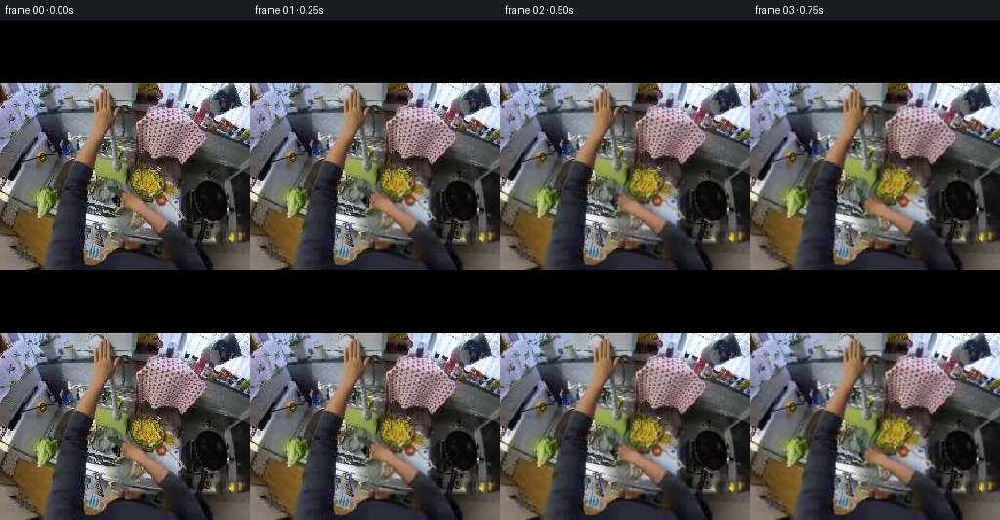
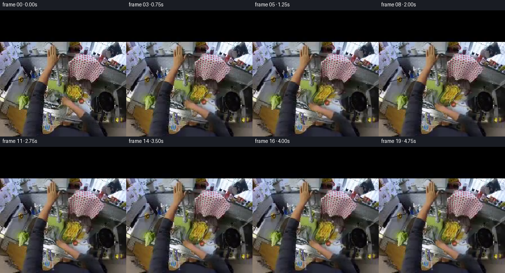

CODING AGENTS AS PIXEL WORLD MODELS
traex/GPT-6.1-Sol · common50_0025
点击播放 · 原生 RGB 像素
逐轮保存的候选
回放视频、检查图与代码变化。
每份候选均可单独播放。实际图片检查记录在下方工具轨迹中。
候选 01播放与检查图
点击播放 · 原生 RGB 像素

展开代码变化
--- 上一保存版本
+++ 本次保存版本
@@ -0,0 +1,193 @@
+"""Deterministic, source-pixel animation of an egocentric tap-opening action.
+
+All geometry and water optics are procedural. The photographed scene and
+photographed skin remain the source of the visible surfaces.
+"""
+from pathlib import Path
+import numpy as np
+from PIL import Image, ImageDraw
+from scipy.ndimage import gaussian_filter, distance_transform_edt, map_coordinates
+import artifact_io
+
+ROOT = Path(__file__).resolve().parent
+H = W = 256
+Y, X = np.mgrid[:H, :W].astype(np.float64)
+
+def smooth(a, b, t):
+ q = np.clip((t-a)/(b-a), 0, 1)
+ return q*q*(3-2*q)
+
+def polygon(points):
+ m = Image.new('L', (W,H))
+ ImageDraw.Draw(m).polygon(points, fill=255)
+ return np.asarray(m).astype(float)/255
+
+def sample(a, x, y, order=1):
+ if a.ndim == 2:
+ return map_coordinates(a, [y,x], order=order, mode='nearest', prefilter=False)
+ return np.stack([map_coordinates(a[...,c], [y,x], order=order, mode='nearest', prefilter=False) for c in range(a.shape[-1])], -1)
+
+def rotate(x,y,cx,cy,ang):
+ dx,dy=x-cx,y-cy
+ c,s=np.cos(ang),np.sin(ang)
+ return cx+c*dx-s*dy, cy+s*dx+c*dy
+
+def compose(im, col, alpha):
+ return im*(1-alpha[...,None])+np.asarray(col)*alpha[...,None]
+
+def make_frames():
+ original=np.asarray(Image.open(ROOT/'first_frame.png').convert('RGB'),dtype=np.uint8)
+ src=original.astype(np.float64)
+ # The hand's distal fingers, palm, thumb, and wrist. The soft support
+ # extends into surrounding pixels, giving an invertible continuous warp
+ # rather than revealing holes at an independently translated cutout edge.
+ handpoly=[(132,174),(140,178),(145,182),(149,186),(153,190),
+ (157,191),(159,188),(159,181),(163,177),(169,177),
+ (173,180),(174,184),(172,189),(167,192),(164,196),
+ (166,200),(171,204),(174,209),(172,214),(167,218),
+ (160,215),(154,211),(150,208),(145,207),(142,202),
+ (140,198),(135,194),(129,191),(126,187),(124,181),
+ (126,177)]
+ m=polygon(handpoly)
+ outside=distance_transform_edt(1-m)
+ handw=np.exp(-outside**2/(2*8.0**2))
+ # Blend at contour, without changing the texture inside the hand.
+ handw=gaussian_filter(handw,1.0)
+ # Let the wrist influence a small area of the dark cuff below it, but
+ # leave the lower edge and the large chrome fixture undisturbed.
+ cuffw=np.exp(-((X-174)/18)**2-((Y-223)/17)**2)*.47
+ cuffw*=smooth(209,220,Y)*(1-smooth(242,256,Y))
+ handw=np.maximum(handw,cuffw)
+ handw*=smooth(162,171,Y)*(1-smooth(245,256,Y))
+ # Mask for the small control surface immediately beside the fingers.
+ lever=polygon([(104,197),(116,199),(132,202),(141,204),
+ (141,209),(128,209),(114,207),(104,203)])
+ lever=gaussian_filter(lever,2.3)
+ tip=np.exp(-((X-131)/9)**2-((Y-181)/9)**2)
+ thumb=np.exp(-((X-165)/7)**2-((Y-184)/9)**2)
+ palm=np.exp(-((X-147)/16)**2-((Y-194)/17)**2)
+
+ def displacement(x,y,reach,turn,settle):
+ hw=sample(handw,x,y)
+ # The initial wrist roll guides the fingertips down-left onto the
+ # silver control; the contact pivot remains fixed during opening.
+ hx,hy=rotate(x,y,164,212,-np.deg2rad(17)*reach)
+ hx-=5.5*reach
+ hy+=2.2*reach
+ hx,hy=rotate(hx,hy,120,201,np.deg2rad(13.5)*turn)
+ hx+=.65*settle
+ hy+=.7*settle
+ dx=(hx-x)*hw
+ dy=(hy-y)*hw
+ # Small finger flexion / thumb opposition forms a firmer grip.
+ tw=sample(tip,x,y)
+ uw=sample(thumb,x,y)
+ dx+=reach*(.9*tw-1.25*uw)
+ dy+=reach*(1.15*tw+.6*uw)
+ # The slender valve lever responds only after contact. The tap's
+ # fixed spout and pedestal are intentionally not rotated.
+ lw=sample(lever,x,y)*(1-hw*.9)
+ lx,ly=rotate(x,y,138,207,np.deg2rad(8.0)*turn)
+ dx+=(lx-x)*lw
+ dy+=(ly-y)*lw
+ return dx,dy
+
+ frames=[]
+ rng=np.random.default_rng(24025)
+ water_noise=rng.normal(0,1,(256,256))
+ water_noise=gaussian_filter(water_noise,(.65,.48))
+ for i in range(20):
+ if i==0:
+ frames.append(original.copy())
+ continue
+ t=i/4
+ reach=smooth(0,1.45,t)
+ turn=smooth(1.3,2.9,t)
+ settle=smooth(2.9,3.6,t)
+ # Once open, the hand stays lightly in contact with the control.
+ # A minute breathing-scale movement keeps the hold natural.
+ if t>3.2:
+ settle+=.07*np.sin((t-3.2)*3.8)
+ sx,sy=X.copy(),Y.copy()
+ # Invert the continuous forward deformation using fixed-point steps.
+ for _ in range(10):
+ dx,dy=displacement(sx,sy,reach,turn,settle)
+ nx,ny=X-dx,Y-dy
+ sx=.55*nx+.45*sx
+ sy=.55*ny+.45*sy
+ im=sample(src,sx,sy)
+ # Natural slight reflected-light variation on the turning skin.
+ skin=(src[...,0]-src[...,1]>20)&(src[...,1]-src[...,2]>10)
+ shade=sample(m*skin.astype(float),sx,sy)
+ im+=shade[...,None]*np.array([1.2,.7,.35])*np.sin(turn*np.pi*.9)
+
+ # A narrow, optically translucent falling stream. Its edge shape and
+ # moving highlights evolve with flow, not a stationary white stripe.
+ opening=smooth(1.8,2.65,t)
+ if opening>0:
+ top=214.2
+ bottom=top+(249.5-top)*smooth(1.8,2.15,t)
+ z=Y-top
+ path=102.8+.135*z+.20*np.sin(z*.5-t*8.4)+.10*np.sin(z*1.7-t*13)
+ width=(1.25+.32*opening)*(1+.085*np.sin(z*.72-t*10.4))
+ dist=X-path
+ gate=smooth(top-.25,top+.9,Y)*(1-smooth(bottom-1.1,bottom+.5,Y))
+ gate*=opening
+ body=np.exp(-.5*(dist/width)**2)*gate
+ # Sub-pixel refraction reuses the sink's actual RGB values.
+ refr=sample(im,X+.75*np.sin(dist*1.8)*body,Y+.32*body)
+ im=im*(1-(body*.50)[...,None])+refr*(body*.50)[...,None]
+ darkrim=np.exp(-((dist+width*.88)/.55)**2)*gate*.20
+ im=compose(im,np.array([39,51,54]),darkrim)
+ pulse=.82+.14*np.sin(z*.91-t*16)+.05*np.sin(z*2.1-t*23)
+ core=np.exp(-((dist-.30)/.62)**2)*gate*(.40+.13*opening)*pulse
+ im=compose(im,np.array([219,229,234]),core)
+ glints=np.exp(-((dist+.48)/.32)**2)*gate*.23
+ glints*=.48+.52*np.maximum(0,np.sin(z*1.23-t*15.5))
+ im=compose(im,np.array([242,247,248]),glints)
+ texture=sample(water_noise,X,Y+t*39)*body
+ im+=texture[...,None]*3.4
+ # Gentle impact glints and ripples on the dark bowl surface.
+ impact=smooth(2.02,2.35,t)*opening
+ cx=107.6;cy=248.9
+ radius=np.sqrt(((X-cx)/1.9)**2+((Y-cy)/.58)**2)
+ ripples=np.zeros((H,W))
+ for k in range(2):
+ phase=((t*1.65+k*.5)%1)
+ r=1.7+phase*4.5
+ ripples+=np.exp(-((radius-r)/.32)**2)*(.10*(1-phase))
+ ripples*=impact
+ im=compose(im,[178,191,194],np.clip(ripples,0,.18))
+ fizz=np.exp(-((X-cx)/2.4)**2-((Y-cy)/1.0)**2)*impact*.28
+ fizz*=.8+.2*np.sin(t*19)
+ im=compose(im,[209,218,219],fizz)
+ for k in range(4):
+ p=(t*2.2+k*.25)%1
+ theta=1.1+k*1.17
+ xx=cx+np.cos(theta)*(2+4*p)
+ yy=cy-4*p+5*p*p
+ droplet=np.exp(-((X-xx)/.45)**2-((Y-yy)/.65)**2)
+ im=compose(im,[190,205,210],droplet*impact*(1-p)*.20)
+
+ # Subtle head lean. Respect the original upper matte throughout.
+ camx=.35*np.sin(t*1.1)+.65*smooth(.15,2.7,t)
+ camy=.25*np.sin(t*1.7)+.25*smooth(0,2.5,t)
+ camgate=smooth(64,75,Y)
+ im=sample(im,X+camx*camgate,Y+camy*camgate)
+ im[:64]=src[:64]
+ frames.append(np.uint8(np.clip(np.rint(im),0,255)))
+ return np.stack(frames)
+
+if __name__=='__main__':
+ frames=make_frames()
+ artifact_io.save(frames,ROOT)
+ # Numeric checks are usable without any visual image tools.
+ original=np.asarray(Image.open(ROOT/'first_frame.png').convert('RGB'))
+ assert np.array_equal(frames[0],original)
+ assert frames.shape==(20,256,256,3) and frames.dtype==np.uint8
+ delta=np.mean(np.abs(np.diff(frames.astype(float),axis=0)),axis=(1,2,3))
+ (ROOT/'generation_checks.txt').write_text(
+ '20 frames; 256x256 RGB uint8; 4 fps; first frame exact.\n'
+ +'Mean consecutive RGB difference: '+', '.join(f'{v:.3f}' for v in delta)+'\n')
+ print('Saved pixels.npz, index.html, and 20 RGB PNG frames.')
+ print('Transition differences:',np.round(delta,3))
候选 02播放与检查图
点击播放 · 原生 RGB 像素

展开代码变化
--- 上一保存版本
+++ 本次保存版本
@@ -170,8 +170,8 @@
im=compose(im,[190,205,210],droplet*impact*(1-p)*.20)
# Subtle head lean. Respect the original upper matte throughout.
- camx=.35*np.sin(t*1.1)+.65*smooth(.15,2.7,t)
- camy=.25*np.sin(t*1.7)+.25*smooth(0,2.5,t)
+ camx=.10*np.sin(t*1.1)+.24*smooth(.15,2.7,t)
+ camy=.08*np.sin(t*1.7)+.10*smooth(0,2.5,t)
camgate=smooth(64,75,Y)
im=sample(im,X+camx*camgate,Y+camy*camgate)
im[:64]=src[:64]
可观测工具轨迹
实际执行的命令与返回图片。
命令 1exit 0
/bin/bash -lc 'ls -la && cat prompt.txt && cat GENERATION_RULES.md'
命令 2exit 0
/bin/bash -lc "cat task_spec.json && cat artifact_io.py && python - <<'PY'
from PIL import Image
import numpy as np
im=np.array(Image.open('first_frame.png').convert('RGB'));print(im.shape)
im=im.reshape(32,8,32,8,3).mean((1,3))
for row in im:
print(' '.join('%02x%02x%02x'%tuple(p.astype(int)) for p in row))
PY"命令 3exit 0
/bin/bash -lc "python - <<'PY'
import numpy as np
from PIL import Image
im=np.asarray(Image.open('first_frame.png'))[:,:,:3]
# Downsample colour classifications. K: dark, S: skin, M: gray/chrome, B: cool blue, Y: gold/green.
a=im[64:].reshape(64,3,85,3,3).mean((1,3)) if False else np.asarray(Image.fromarray(im).resize((85,85)))[21:]
for j,r in enumerate(a):
s=''
for p in r:
R,G,B=map(float,p);v=(R+G+B)/3
if v<28:c=' '
elif R>G*1.14 and G>B*1.12:c='S' if R>115 else 's'
elif R>G*1.12 and B>G*1.01:c='P' if R>125 else 'p'
elif G>B*1.18 and R>=G*.86:c='Y' if v>85 else 'y'
elif B>R*1.12:c='B' if v>130 else 'b'
else:c='@' if v>200 else 'O' if v>155 else 'o' if v>105 else ':' if v>60 else '.'
s+=c
print('%03d '%(64+3*j)+s)
PY"命令 4exit 0
/bin/bash -lc "python - <<'PY'
from PIL import Image
import numpy as np
im=np.array(Image.open('first_frame.png').convert('RGB'))
# luminance ASCII at 2x3 sampling, axes
r=Image.fromarray(im).resize((128,96));a=np.array(r).mean(-1)
cs=' .,:;irsXA253hMHGS#9B&@'
print(' '+''.join(str((2*j)//10%10) for j in range(128)))
for j,row in enumerate(a):
if j>=23: print('%03d '%round(j*256/96)+''.join(cs[min(len(cs)-1,int(p/256*len(cs)))] for p in row))
print('\\nSample colours')
for y in range(70,251,10):
print(y,[(x,tuple(im[y,x])) for x in range(80,241,10)])
PY"命令 5exit 0
/bin/bash -lc "python - <<'PY'
from PIL import Image
import numpy as np
im=np.array(Image.open('first_frame.png').convert('RGB')).astype(float)
# per 4px blocks RGB vectors in candidate hand
for y in range(72,148,4):
print(f'y={y}: '+' '.join(f'{x}:{tuple(np.round(im[y:y+4,x:x+4].mean((0,1))).astype(int))}' for x in range(92,236,4)))
PY"命令 6exit 0
/bin/bash -lc "python - <<'PY'
from PIL import Image
import numpy as np
im=np.array(Image.open('first_frame.png')).astype(float)
R,G,B=im[:,:,0],im[:,:,1],im[:,:,2]
a=(R-G>17)&(B-G>-12)&(R>80)
for y in range(66,154,2):
xs=np.where(a[y] & (np.arange(256)>120))[0]
if len(xs):
runs=np.split(xs,np.where(np.diff(xs)>1)[0]+1)
print(y,[(int(r[0]),int(r[-1])) for r in runs if len(r)>2])
# a detailed hue ASCII for upper middle/right
small=np.array(Image.fromarray(im.astype('uint8')).crop((80,64,256,160)).resize((88,48))).astype(float)
print(' '+' '.join(str(x) for x in range(80,256,10)))
for j,row in enumerate(small):
s=''
for R,G,B in row:
v=(R+G+B)/3
if v<25:c=' '
elif R-G>18 and G-B>15:c='T' if R>115 else 't'
elif R-G>15 and B-G>-15:c='H' if R>115 else 'h'
elif G-B>20:c='Y' if v>80 else 'y'
elif B-R>12:c='B' if v>150 else 'b'
else:c='@' if v>220 else '#' if v>170 else 'O' if v>120 else ':' if v>80 else '.'
s+=c
print('%03d '%(64+2*j)+s)
PY"命令 7exit 0
/bin/bash -lc "python - <<'PY'
from PIL import Image
import numpy as np
im=np.asarray(Image.open('first_frame.png').convert('RGB')).astype(float)
# Output median filtered palette map as letter matrix; separating orange, pink, pale, dark, slate, chrome
from scipy.ndimage import median_filter
s=median_filter(im,size=(5,5,1))[64:]
s=s.reshape(64,3,256,3).mean(1)[:,::3]
for j,row in enumerate(s):
out=''
for r,g,b in row:
v=(r+g+b)/3
if v<23:c=' '
elif r-g>24 and g-b>15:c='T'
elif r-g>17 and b-g>-12:c='P'
elif g-b>24:c='Y'
elif b-r>15:c='B' if v>130 else 'b'
else:c='@' if v>210 else 'M' if v>155 else 'o' if v>100 else ':' if v>55 else '.'
out+=c
print('%03d '%(64+3*j)+out)
PY"命令 8exit 0
/bin/bash -lc "python - <<'PY'
from PIL import Image
import numpy as np
from scipy.ndimage import gaussian_filter
im=gaussian_filter(np.asarray(Image.open('first_frame.png').convert('RGB')).astype(float),(1.2,1.2,0))
for y in range(148,221,4):
print(y, ' '.join('%3d,%3d,%3d'%tuple(np.round(im[y,x]).astype(int)) for x in range(112,185,4)))
# high-resolution luminance patch with local contrast improvement
x0,y0,x1,y1=85,140,195,232
a=im[y0:y1,x0:x1].mean(-1)
for j,row in enumerate(a[::2,::2]):
print('%03d '%(y0+2*j)+''.join(' .,:;irsXAHM#@'[min(12,int(p/256*13))] for p in row))
PY"命令 9exit 0
/bin/bash -lc "python - <<'PY'
from PIL import Image
import numpy as np
from scipy.ndimage import gaussian_filter
im=gaussian_filter(np.asarray(Image.open('first_frame.png').convert('RGB')).astype(float),(1,1,0))
# tappish patch colour map, one char per pixel
for y in range(175,241,2):
s=''
for r,g,b in im[y,84:184]:
v=(r+g+b)/3
if v<25:c=' '
elif r-g>22 and g-b>12:c='S'
elif r-g>18:c='s'
elif g-b>23:c='Y'
else:c='@' if v>210 else '#' if v>165 else 'O' if v>115 else ':' if v>70 else '.'
s+=c
print('%03d '%y+s)
PY"命令 10exit 0
/bin/bash -lc "python - <<'PY'
import numpy as np
from PIL import Image
from scipy.ndimage import gaussian_filter
im=np.asarray(Image.open('first_frame.png')).astype(float)
for name,(x0,y0,x1,y1) in {'upper':(135,85,217,141),'lower':(122,176,174,216),'tan':(94,77,112,123)}.items():
a=im[y0:y1,x0:x1,:3]
print(name,'mean',a.mean((0,1)),'highfreq',abs(a-gaussian_filter(a,(1,1,0))).mean((0,1)))
# mean color pixels just beyond plausible right hand border
for y in range(80,141,2):
print(y,[(x,tuple(im[y-1:y+2,x-1:x+2,:3].mean((0,1)).round().astype(int))) for x in [202,208,214,220,226,232,238,244,250,254]])
PY"命令 11exit 0
/bin/bash -lc "python - <<'PY'
from PIL import Image
import numpy as np
from scipy.ndimage import gaussian_filter
im=gaussian_filter(np.array(Image.open('first_frame.png').convert('RGB')).astype(float),(1,1,0))
# exact lower skin extent
R,G,B=im.transpose(2,0,1);m=(R-G>22)&(G-B>10)&(R>85)
for y in range(172,220):
xs=np.flatnonzero(m[y] & (np.arange(256)>110) & (np.arange(256)<185))
runs=np.split(xs,np.where(np.diff(xs)>1)[0]+1)
print(y,[(int(r[0]),int(r[-1])) for r in runs if len(r)>2])
# tap geometry detailed grey
for y in range(192,242):
row=im[y,84:151].mean(-1)
print('%03d '%y+''.join(' .,:;irsXA253hMHGS#9B&@'[min(21,int(v/256*22))] for v in row))
PY"命令 12exit 0
/bin/bash -lc "cat > generate.py <<'PY'
\"\"\"Deterministic, source-pixel animation of an egocentric tap-opening action.
All geometry and water optics are procedural. The photographed scene and
photographed skin remain the source of the visible surfaces.
\"\"\"
from pathlib import Path
import numpy as np
from PIL import Image, ImageDraw
from scipy.ndimage import gaussian_filter, distance_transform_edt, map_coordinates
import artifact_io
ROOT = Path(__file__).resolve().parent
H = W = 256
Y, X = np.mgrid[:H, :W].astype(np.float64)
def smooth(a, b, t):
q = np.clip((t-a)/(b-a), 0, 1)
return q*q*(3-2*q)
def polygon(points):
m = Image.new('L', (W,H))
ImageDraw.Draw(m).polygon(points, fill=255)
return np.asarray(m).astype(float)/255
def sample(a, x, y, order=1):
if a.ndim == 2:
return map_coordinates(a, [y,x], order=order, mode='nearest', prefilter=False)
return np.stack([map_coordinates(a[...,c], [y,x], order=order, mode='nearest', prefilter=False) for c in range(a.shape[-1])], -1)
def rotate(x,y,cx,cy,ang):
dx,dy=x-cx,y-cy
c,s=np.cos(ang),np.sin(ang)
return cx+c*dx-s*dy, cy+s*dx+c*dy
def compose(im, col, alpha):
return im*(1-alpha[...,None])+np.asarray(col)*alpha[...,None]
def make_frames():
original=np.asarray(Image.open(ROOT/'first_frame.png').convert('RGB'),dtype=np.uint8)
src=original.astype(np.float64)
# The hand's distal fingers, palm, thumb, and wrist. The soft support
# extends into surrounding pixels, giving an invertible continuous warp
# rather than revealing holes at an independently translated cutout edge.
handpoly=[(132,174),(140,178),(145,182),(149,186),(153,190),
(157,191),(159,188),(159,181),(163,177),(169,177),
(173,180),(174,184),(172,189),(167,192),(164,196),
(166,200),(171,204),(174,209),(172,214),(167,218),
(160,215),(154,211),(150,208),(145,207),(142,202),
(140,198),(135,194),(129,191),(126,187),(124,181),
(126,177)]
m=polygon(handpoly)
outside=distance_transform_edt(1-m)
handw=np.exp(-outside**2/(2*8.0**2))
# Blend at contour, without changing the texture inside the hand.
handw=gaussian_filter(handw,1.0)
# Let the wrist influence a small area of the dark cuff below it, but
# leave the lower edge and the large chrome fixture undisturbed.
cuffw=np.exp(-((X-174)/18)**2-((Y-223)/17)**2)*.47
cuffw*=smooth(209,220,Y)*(1-smooth(242,256,Y))
handw=np.maximum(handw,cuffw)
handw*=smooth(162,171,Y)*(1-smooth(245,256,Y))
# Mask for the small control surface immediately beside the fingers.
lever=polygon([(104,197),(116,199),(132,202),(141,204),
(141,209),(128,209),(114,207),(104,203)])
lever=gaussian_filter(lever,2.3)
tip=np.exp(-((X-131)/9)**2-((Y-181)/9)**2)
thumb=np.exp(-((X-165)/7)**2-((Y-184)/9)**2)
palm=np.exp(-((X-147)/16)**2-((Y-194)/17)**2)
def displacement(x,y,reach,turn,settle):
hw=sample(handw,x,y)
# The initial wrist roll guides the fingertips down-left onto the
# silver control; the contact pivot remains fixed during opening.
hx,hy=rotate(x,y,164,212,-np.deg2rad(17)*reach)
hx-=5.5*reach
hy+=2.2*reach
hx,hy=rotate(hx,hy,120,201,np.deg2rad(13.5)*turn)
hx+=.65*settle
hy+=.7*settle
dx=(hx-x)*hw
dy=(hy-y)*hw
# Small finger flexion / thumb opposition forms a firmer grip.
tw=sample(tip,x,y)
uw=sample(thumb,x,y)
dx+=reach*(.9*tw-1.25*uw)
dy+=reach*(1.15*tw+.6*uw)
# The slender valve lever responds only after contact. The tap's
# fixed spout and pedestal are intentionally not rotated.
lw=sample(lever,x,y)*(1-hw*.9)
lx,ly=rotate(x,y,138,207,np.deg2rad(8.0)*turn)
dx+=(lx-x)*lw
dy+=(ly-y)*lw
return dx,dy
frames=[]
rng=np.random.default_rng(24025)
water_noise=rng.normal(0,1,(256,256))
water_noise=gaussian_filter(water_noise,(.65,.48))
for i in range(20):
if i==0:
frames.append(original.copy())
continue
t=i/4
reach=smooth(0,1.45,t)
turn=smooth(1.3,2.9,t)
settle=smooth(2.9,3.6,t)
# Once open, the hand stays lightly in contact with the control.
# A minute breathing-scale movement keeps the hold natural.
if t>3.2:
settle+=.07*np.sin((t-3.2)*3.8)
sx,sy=X.copy(),Y.copy()
# Invert the continuous forward deformation using fixed-point steps.
for _ in range(10):
dx,dy=displacement(sx,sy,reach,turn,settle)
nx,ny=X-dx,Y-dy
sx=.55*nx+.45*sx
sy=.55*ny+.45*sy
im=sample(src,sx,sy)
# Natural slight reflected-light variation on the turning skin.
skin=(src[...,0]-src[...,1]>20)&(src[...,1]-src[...,2]>10)
shade=sample(m*skin.astype(float),sx,sy)
im+=shade[...,None]*np.array([1.2,.7,.35])*np.sin(turn*np.pi*.9)
# A narrow, optically translucent falling stream. Its edge shape and
# moving highlights evolve with flow, not a stationary white stripe.
opening=smooth(1.8,2.65,t)
if opening>0:
top=214.2
bottom=top+(249.5-top)*smooth(1.8,2.15,t)
z=Y-top
path=102.8+.135*z+.20*np.sin(z*.5-t*8.4)+.10*np.sin(z*1.7-t*13)
width=(1.25+.32*opening)*(1+.085*np.sin(z*.72-t*10.4))
dist=X-path
gate=smooth(top-.25,top+.9,Y)*(1-smooth(bottom-1.1,bottom+.5,Y))
gate*=opening
body=np.exp(-.5*(dist/width)**2)*gate
# Sub-pixel refraction reuses the sink's actual RGB values.
refr=sample(im,X+.75*np.sin(dist*1.8)*body,Y+.32*body)
im=im*(1-(body*.50)[...,None])+refr*(body*.50)[...,None]
darkrim=np.exp(-((dist+width*.88)/.55)**2)*gate*.20
im=compose(im,np.array([39,51,54]),darkrim)
pulse=.82+.14*np.sin(z*.91-t*16)+.05*np.sin(z*2.1-t*23)
core=np.exp(-((dist-.30)/.62)**2)*gate*(.40+.13*opening)*pulse
im=compose(im,np.array([219,229,234]),core)
glints=np.exp(-((dist+.48)/.32)**2)*gate*.23
glints*=.48+.52*np.maximum(0,np.sin(z*1.23-t*15.5))
im=compose(im,np.array([242,247,248]),glints)
texture=sample(water_noise,X,Y+t*39)*body
im+=texture[...,None]*3.4
# Gentle impact glints and ripples on the dark bowl surface.
impact=smooth(2.02,2.35,t)*opening
cx=107.6;cy=248.9
radius=np.sqrt(((X-cx)/1.9)**2+((Y-cy)/.58)**2)
ripples=np.zeros((H,W))
for k in range(2):
phase=((t*1.65+k*.5)%1)
r=1.7+phase*4.5
ripples+=np.exp(-((radius-r)/.32)**2)*(.10*(1-phase))
ripples*=impact
im=compose(im,[178,191,194],np.clip(ripples,0,.18))
fizz=np.exp(-((X-cx)/2.4)**2-((Y-cy)/1.0)**2)*impact*.28
fizz*=.8+.2*np.sin(t*19)
im=compose(im,[209,218,219],fizz)
for k in range(4):
p=(t*2.2+k*.25)%1
theta=1.1+k*1.17
xx=cx+np.cos(theta)*(2+4*p)
yy=cy-4*p+5*p*p
droplet=np.exp(-((X-xx)/.45)**2-((Y-yy)/.65)**2)
im=compose(im,[190,205,210],droplet*impact*(1-p)*.20)
# Subtle head lean. Respect the original upper matte throughout.
camx=.35*np.sin(t*1.1)+.65*smooth(.15,2.7,t)
camy=.25*np.sin(t*1.7)+.25*smooth(0,2.5,t)
camgate=smooth(64,75,Y)
im=sample(im,X+camx*camgate,Y+camy*camgate)
im[:64]=src[:64]
frames.append(np.uint8(np.clip(np.rint(im),0,255)))
return np.stack(frames)
if __name__=='__main__':
frames=make_frames()
artifact_io.save(frames,ROOT)
# Numeric checks are usable without any visual image tools.
original=np.asarray(Image.open(ROOT/'first_frame.png').convert('RGB'))
assert np.array_equal(frames[0],original)
assert frames.shape==(20,256,256,3) and frames.dtype==np.uint8
delta=np.mean(np.abs(np.diff(frames.astype(float),axis=0)),axis=(1,2,3))
(ROOT/'generation_checks.txt').write_text(
'20 frames; 256x256 RGB uint8; 4 fps; first frame exact.\\n'
+'Mean consecutive RGB difference: '+', '.join(f'{v:.3f}' for v in delta)+'\\n')
print('Saved pixels.npz, index.html, and 20 RGB PNG frames.')
print('Transition differences:',np.round(delta,3))
PY
python generate.py"命令 13exit 0
/bin/bash -lc "python - <<'PY'
import generate as g
import numpy as np
from PIL import Image
from scipy.ndimage import distance_transform_edt,gaussian_filter
# Numeric visual-free inspection of the result and source geometry.
f=np.stack([np.asarray(Image.open(f'frames/{i:02d}.png')) for i in range(20)])
print('Shape/dtype:',f.shape,f.dtype)
print('Matte exact:',all(np.array_equal(a[:64],f[0,:64]) for a in f))
for pt in [(130,182),(145,194),(165,184),(164,212),(104,211)]:
x,y=pt
for i in [0,6,12,19]:
p=f[i,y-2:y+3,x-2:x+3].mean((0,1)).round(1)
print(pt,'frame',i,'RGB',p)
print('Motion by region final absolute RGB differences:')
for name,(x0,y0,x1,y1) in {'tap_hand':(118,171,187,235),'fixture':(84,195,144,240),'stream':(99,213,114,256),'upper_scene':(0,64,256,165)}.items():
d=abs(f[-1,y0:y1,x0:x1].astype(float)-f[0,y0:y1,x0:x1])
print(name,round(d.mean(),3))
# Source details under spout and within right hand, with coordinates.
s=np.asarray(Image.open('first_frame.png'))
for y in range(205,218,2):
print('under spout',y,[(x,tuple(s[y-1:y+2,x-1:x+2,:3].mean((0,1)).round().astype(int))) for x in range(92,111,3)])
PY"命令 14exit 0
/bin/bash -lc 'command -v ffmpeg || true; du -h pixels.npz index.html inspection.png && cat generation_checks.txt'
命令 15exit 0
/bin/bash -lc "python generate.py && python - <<'PY'
from PIL import Image
import numpy as np
from pathlib import Path
p=np.load('pixels.npz')['pixels'];a=np.array(Image.open('first_frame.png').convert('RGB'),dtype=np.uint32)
f=(a[:,:,0]<<16)|(a[:,:,1]<<8)|a[:,:,2]
assert p.shape==(256,256,20)
assert np.array_equal(p[:,:,0],f)
assert len(list(Path('frames').glob('*.png')))==20
print('Verified submitted packed RGB tensor and pixel-identical first frame.')
PY"保存候选 2 份；完成命令 15 次；可验证图片返回 0 张。原始 API 响应与完整日志保留在本地。